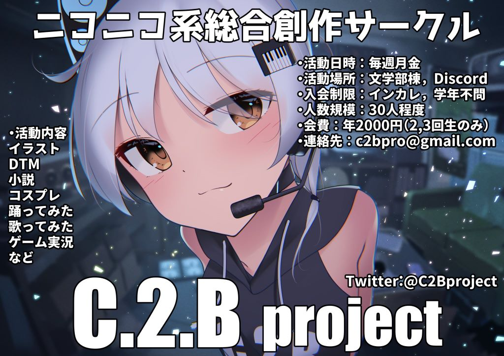

本サークルについて
こんにちは、C.2.B project(通称しつび)です！
我々はイラスト、DTM、コスプレ、小説、踊ってみた歌ってみた、ゲーム開発など、ゆるーく創造的オタク活動をするインカレサークルです。
京都大学を中心に活動していて京大生の会員が多数ですが、京産、京女、同女、立命館やその他大学の方もいらっしゃいます。
大学、学年を問わず誰でも歓迎です！詳しくはC.2.B projectとはをご覧ください。
活動日時・場所
2023年度は毎週月曜日と金曜日に例会を行う予定です。月曜日は18:45から文学部棟にて対面で、金曜日は20:00からDiscordにてオンラインで行う予定です。
例会は参加必須ではなく、都合の良い時に来たい人が集まるという感じです。また、テスト期間中は例会はありません。